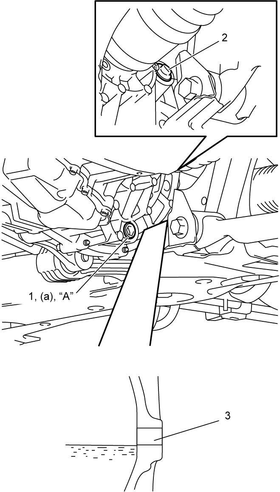

5F
| Transaxle Oil Change |
1)Before changing oil, stop engine and hoist vehicle horizontally.
2)Remove engine undercover.
3)With vehicle hoisted, check oil leakage. If leakage exists, correct it.
4)Remove oil level / filler plug (2).
5)Cover suspension frame with a board (4) to protect it from dripping oil, remove drain plug (1) and drain oil.
NOTE:
Wipe oil off from suspension frame where the portions get wet with the transaxle oil.
6)Apply sealant to thread of drain plug, and tighten it to specified torque.
7)Add new specified oil until oil level reaches lower end of oil filler plug hole (3) as shown in figure.
Transaxle oil specification
SUZUKI TWIN CLUTCH SYSTEM GEAR OIL 0001 or PETRONAS TUTELA TRANSMISSION GEARFORCE:
990F0–TCSSG–000
Transaxle oil capacity
Reference:
2.1 liters (4.44/3.70 US/Imp. pt)
8)Install oil level / filler plug.


 "Expand image")